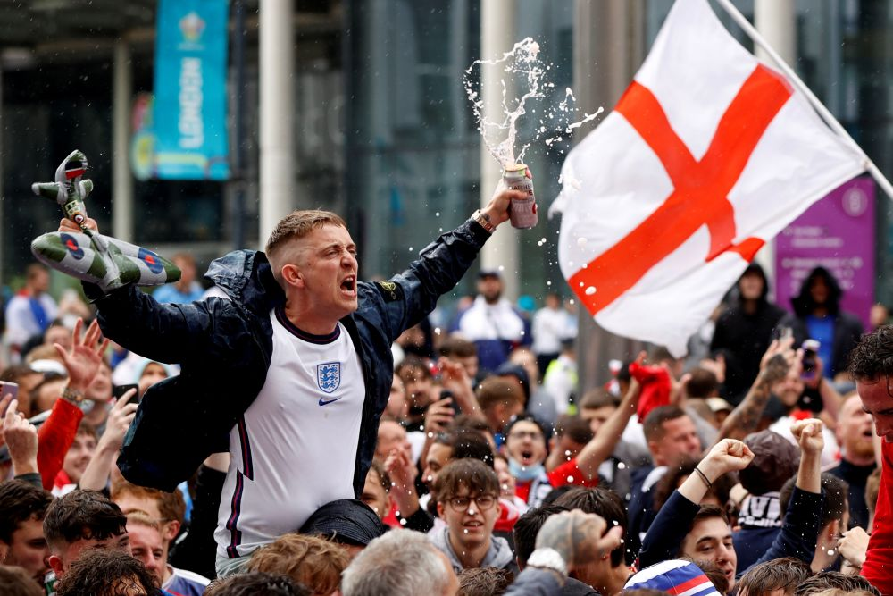
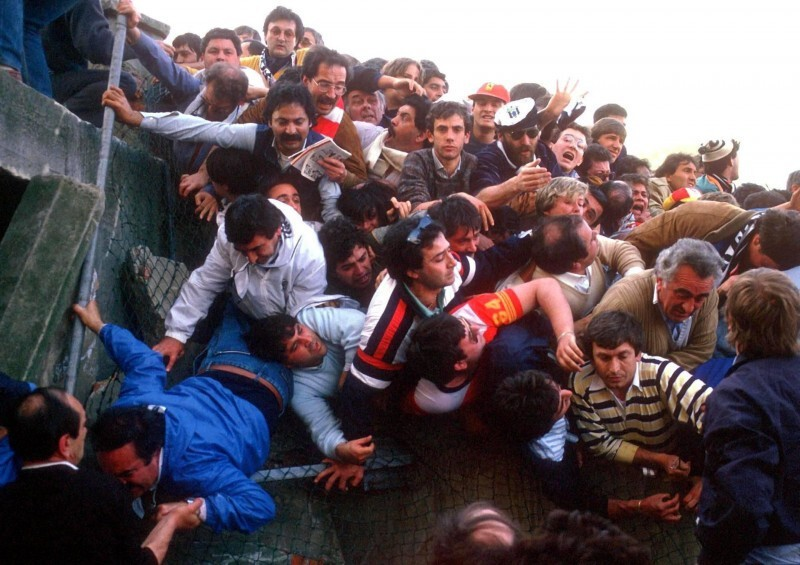

Отношение британцев к футболу
Футбол – не просто английский национальный спорт, а огромная и глубокая часть английской культуры. В каждой британской школе работает секция футбола, а футбольные поля Великобритании никогда не пустуют. В каждом районе крупных городов и в каждом небольшом городе и даже поселке есть футбольные команды: взрослая и детская. Существует множество стихийно образованных «дворовых» команд, которые настолько хорошо развиты, что имеют свою собственную форму и приглашают на матчи судей.
Большая часть мужского населения Великобритании – заядлые болельщики. Среди мужчин любого возраста принято болеть за какую-нибудь команду. Причем национальный менталитет, основанный на сдержанности и принижении своих достоинств, заставляет большинство болеть за слабые или неудачные команды – конечно, только во время матчей между национальными клубами. Если же это международный турнир, то британцы проявляют единодушный патриотизм.
Почти с любым англичанином можно поддержать интересную беседу о футбольных клубах, правилах игры, знаменательных матчах. Британцы хорошо разбираются в национальном футболе других стран, в том числе в российском футболе: могут назвать несколько крупных клубов, имена самых успешных русских футболистов, результаты России в последних чемпионатах.
Каждый приличный британский паб показывает футбольные матчи. В дни игр пабы обычно переполнены, даже если это будний день.
Такие сдержанные и холодные англичане оказываются самыми активными, эмоциональными и даже яростными болельщиками. Именно в Великобритании сложилась самая крупная и жестокая субкультура футбольных фанатов, которые нарушают общественный порядок до и после матчей. Неудивительно – еще в средневековье у англичан футбол ассоциировался с боевыми сражениями. В 60-80е годы 20 века почти каждый матч в Великобритании сопровождался драками.
В 1985 году английские хулиганские группировки футбольных фанатов стали причиной трагедии на бельгийском стадионе, где проходил финал Кубка европейских чемпионов между итальянским клубом «Ювентус» и английским «Ливерпулем». Английские фанаты, будучи в большинстве, вынудили итальянцев залезть на стену стадиона, из-за чего та рухнула и вызвала гибель 39 преимущественно невинных человек. Возможно, эта трагедия заставила британских фанатов умерить свой пыл.
Сегодня движение фанатов в Великобритании продолжается, но враждующие группировки встречаются для выяснения отношений в отдаленных местах. С каждым годом им все сложнее и сложнее действовать: английская полиция поставила своей основной целью остановить околофутбольное насилие. Да и международные футбольные ассоциации часто накладывают ограничения на английских фанатов: например, в 1993 году больше тысячи британских болельщиков выслали из Нидерландов из-за хулиганского поведения.
Известный английский антрополог Кейт Фокс, автор книги «Англия и англичане. О чем молчат путеводители» считает, что жестокое движение футбольных фанатов в Великобритании – следствие природной стеснительности англичан, которую они часто пытаются преодолеть с помощью антиобщественного поведения, чрезмерного потребления спиртных напитков и драк.